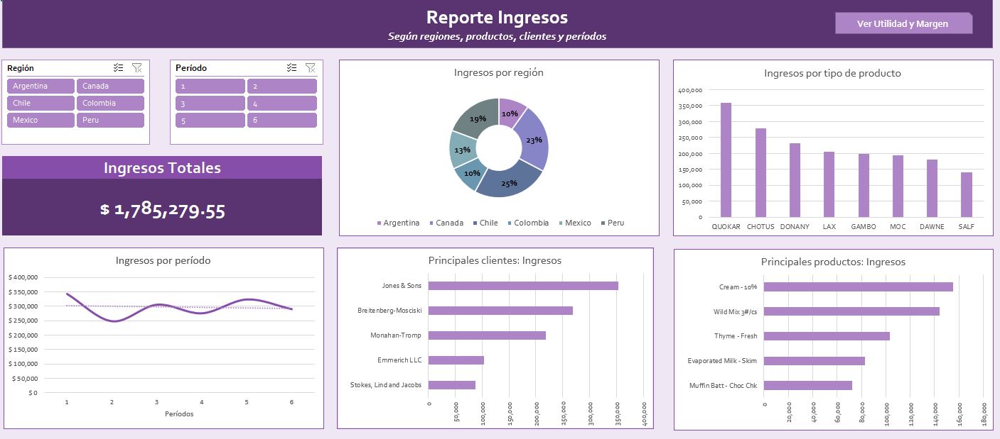
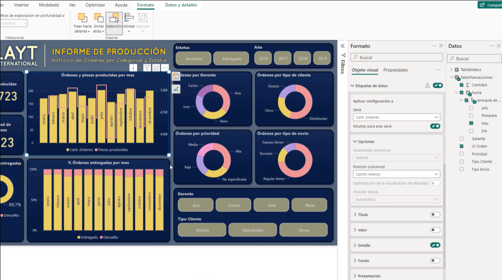
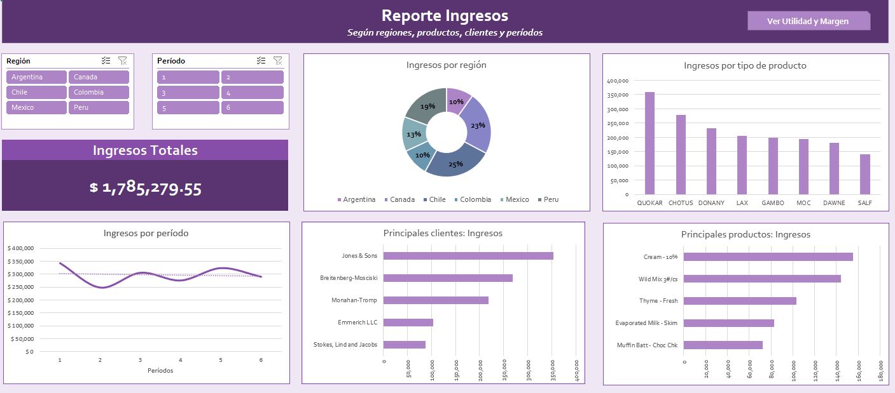
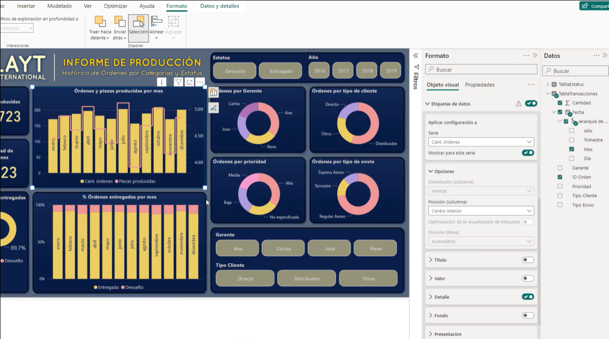

✅ INSCRIPCIÓN : https://forms.gle/Qaiz92wui66Up9fNA
✅ Costo Total: 300.000gs
Incluyen: Materiales + Grabaciones + Certificado de 40 horas
✅ Inicio: Martes 06 de agosto - Hora: 19 a 21.30hs
Fechas: 6, 13, 20, 27 de agosto y 3 de setiembre de 2024"Descuento especial para grupos de 2 o más personas"
- 2 pers. 250mil c/u
- 3 pers. 200mil c/u
- 4 pers. o más 180mil c/u
✅ Formas de Pago:
Transf. bancaria:
Banco Itaú
Cuenta N° 720005407
Titular: Oscar González Frutos
CI: 3584172
Giros Tigo:
0983 352 932
✅ Enviar comprobante aquí.
DOCENTE: Oscar González Frutos
PROGRAMA
Excel - Proyecto 1
- Presentación del Proyecto
- Recursos del proyecto
- Comprendiendo Excel
- Creación de tablas
- Formato condicional
- Segmentadores de datos
- Creación de tablas dinámicas y filtros de datos
- Copiar, mover y conectar tablas dinámicas
- Gráficos recomendados
- Tablas recomendadas
- Gráficos dinámicos
- Herramientas de gráficos
- Ajustes finales al informe
- Evaluación - Verdadero o Falso
Excel - Proyecto 2
- Presentación del proyecto
- Recursos del proyecto
- Preparación de datos
- Tablas dinámicas y filtros
- Campos calculados
- Formato condicional
- Gráficos combinados
- Gráficos y líneas de tendencia
- Gráficos de barras y columnas
- Reporte Ingresos
- Ajustes de formato
- Reporte Utilidad y Margen
- Vínculos y navegación entre reportes
- Revisión final
- Evaluación - Verdadero o Falso
Excel - Proyecto 3
- Presentación del Proyecto
- Recursos del Proyecto
- Exploración de datos con tablas dinámicas
- Filtros y fechas
- Operaciones rápidas con tablas dinámicas
- Formatos condicionales
- Relación entre tablas
- Gráficos dinámicos
- Reporte de producción
- Ajustes de formato
- Conexiones de informe
- Gráficos adicionales
- Navegación entre reportes
- Revisión final
- Evaluación – Verdadero o Falso
Power BI - Proyecto 1
- Presentación del proyecto
- Recursos del proyecto
- Descarga e instalación
- Obtención de datos
- Formato de visualizaciones
- Visualizaciones de tipo matriz
- Filtros y tarjetas
- Visualizaciones de tipo gráfico
- Informe de ventas
- Ajustes finales al informe
- Actualización de datos
- Evaluación - Verdadero o Falso
Power BI - Proyecto 2
- Presentación del proyecto
- Recursos del proyecto
- Ajustes de versión preliminar
- Obtener y preparar datos
- Top N y matrices
- Medidas DAX
- Formatos Condicionales
- Interacción entre matrices
- Relaciones entre tablas
- Gráficos Combinados
- Gráficos de Línea
- Reporte Ingresos
- Formato Reporte Ingresos
- Personalizar Colores de Tema
- Reporte Utilidad
- Ajustes Formato Reporte Utilidad
- Trabajar con Botones - Power BI P2
- IMPORTANTE: Antes de publicar en Power BI Service
- Publicar Reporte en Servicio Power BI
Power BI - Proyecto 3
- Presentación del proyecto
- Recursos del proyecto
- Obtener datos
- Trabajar con tablas y matrices
- Segmentadores y panel de filtros
- Jerarquía de fechas
- Medidas implícitas y cálculos en matrices
- Formato condicional
- Relaciones entre tablas
- Panel de selección
- Gráficos 100% apilados
- Visualizaciones en versión preliminar
- Reporte producción
- Edición de interacciones
- Visualizaciones adicionales
- Sincronización de segmentadores
- Versión de reporte para dispositivos móviles
- Revisión final y más
- Cuestionario: Evaluación - Verdadero o Falso
Ejemplos:
 



Metodología de Enseñanza
✅ 100% online en vivo, interactuando docente y alumnos:
- Tutorías personalizadas para resolver dudas y guiar el aprendizaje.
- Opción para que los alumnos trabajen con sus propias bases de datos.
- Clases grabadas disponibles para repasar el contenido.
- Materiales de apoyo descargables para seguir el curso.
- Ejercicios prácticos para aplicar los conceptos aprendidos.
- Sesiones de preguntas y respuestas para aclarar conceptos en tiempo real.